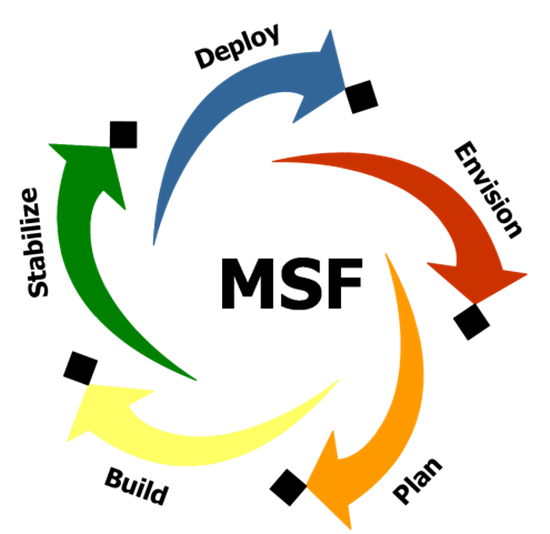

Sistemas de Informação
Menu
Home
Feature Driven Development
Extreme Programming
Microsoft Solutions Framework
Dynamic System Development Model
SCRUM
Microsoft Solutions Framework

Microsoft Solutions Framework
Principais Elementos do MSF
Princípios fundamentais e as mentalidades do MSF
Princípios fundamentais
Mentalidades
O Modelo de Equipe do MSF
O Modelo de Governança do MSF
Trilhas
Trilha de Governança
Trilhas de Aprovação
Pontos de verificação
Abordagem iterativa
Pergunta / Referências Bibliográficas
© Copyright 2019 - Trabalho Acadêmico
Professor: Andre Luiz Gonçalves Campos